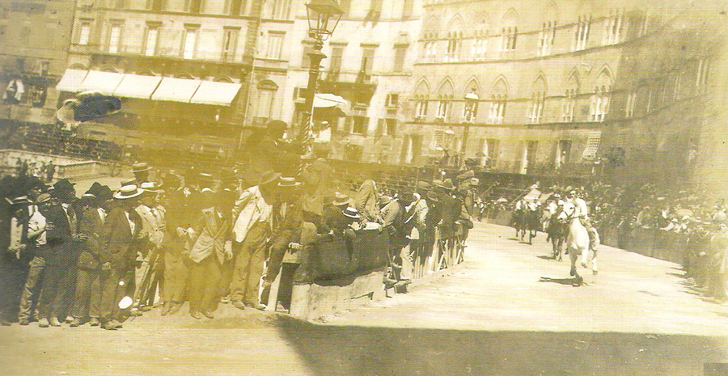

|
In neretto chi vinse la prova; l'ordine delle dieci Contrade segue quello dell'estrazione, ossia è riferito alla prima prova.

Il Palio fu vinto dal'Istrice (vedi la scheda relativa)
I migliori cavalli toccarono alla Lupa, alla Giraffa (quello che vinse l’ultimo Palio nella Lupa), all’Istrice (lo stesso che questa Contrada ebbe nell’agosto 1912) e al Montone: erano tutti di identica forza. Cavalli discreti toccarono alla Chiocciola (lo stesso dell’agosto 1912), alla Tartuca e alla Torre; cattivi quelli andati in sorte all’Aquila, al Leocorno e alla Selva.
1a PROVA - Dato il giorno festivo, una folla straordinaria assisteva alla prova di questa sera.
Dal canape partiva prima la Chiocciola seguita dalla Tartuca e dall’Aquila, quindi dagli altri in gruppo. A S.Martino la Torre che era già terza, cadeva insieme con il cavallo, la quale caduta fece pure cadere il cavallo del Montone. Al principio del 2° giro entrava prima l’Istrice e seconda la Lupa, e durante il 3° giro si ebbe una bella gara fra queste due. Alla vincita arrivarono nell’ordine seguente: Istrice, Lupa, Aquila.
Oltre la Torre ed il Montone caddero al 2° giro: a S.Martino il Leocorno e al Casato la Selva. I cavalli di questi due dopo la caduta dei respettivi fantini si fermarono.
Il fantino della Torre rimasto in terra privo di sensi fu subito trasportato dalla Pubblica Assistenza allo Spedale, dove gli furono riscontrate una leggera escoriazione alla testa, e alcune contusioni con distorsione al braccio destro; lasciò subito lo spedale.
2a PROVA - Dal canape partiva prima l’Istrice, ma subito trattenne il cavallo, in modo che a S.Martino voltava prima l’Aquila che tale si mantenne per due giri; fu quindi passata dalla Chiocciola e successivamente dalla Tartuca. Tutta la prova si può dire si ridusse a una bellissima gara fra Chiocciola, Tartuca e Aquila; finalmente la vittoria arrise alla Chiocciola , seconda TartuCa, terza Aquila.
Nessuna delle altre Contrade prese parte attiva alla prova.
3a PROVA - Dal canape partiva prima l’Aquila che tale si mantenne fino a S.Martino, nel qual punto fu passata dalla Chiocciola e poco dopo anche dalla Giraffa. Al principio del 2° giro la Giraffa raggiunse la Chiocciola; fra i due s’impegnò allora una bellissima gara, e solo al principio del 3° giro la Giraffa poté passare prima. Giunti sotto Casa Sansedoni il Montone con una vera volata da quarto passò primo, e poté mantenersi tale per tutto il resto della corsa nonostante gli sforzi fatti dalla Giraffa per raggiungerlo. Alla vincita arrivarono nell’ordine seguente: Montone, Giraffa, Chiocciola.
Il fantino del Leocorno cadde al 1° giro davanti alla Cappella, ed il cavallo poco dopo si fermò.
Il cavallo della Torre venne esonerato dal prendere parte a questa prova “in seguito a grave zoppicatura causata da contusione alla faccia interna del carpo dell’arto destro” (certificato del Veterinario Comunale Dott. Sampoli).
4a PROVA - Dal canape partì prima la Tartuca, seguita dalla Giraffa e dall’Istrice, venivano quindi gli altri in gruppo; in quest’ordine fu compiuto il 1° giro. Poco dopo che fu cominciato il 2° giro, avendo la Giraffa e l’Istrice trattenuti i loro cavalli, entrò secondo il Leocorno e terzo il Montone, e tali si mantennero per tutto il resto della corsa, senza che nessuno dei due giungesse a contrastare la Tartuca che indisturbata vinse la prova.
Anche a questa prova non prese parte la Torre, avendo sempre il cavallo zoppo.
PROVA GENERALE - Questa prova riuscì bellissima e di vivo interesse per la lotta accanita che vi fu durante tutta la corsa fra Aquila, Chiocciola, Tartuca e Montone. Quest’ultimo, partito con ritardo, alla fine del 2° giro riuscì a passare in testa e giunse primo. Seconda Chiocciola, terza Tartuca.
Il cavallo della Selva non volle partire dal canape.
Oltre il cavallo della Torre, anche quello dell’Istrice fu dal veterinario comunale Dott. Sampoli esonerato dal prendere parte a questa prova, perché “zoppo in seguito a quarto falso del sinistro anteriore”.
PROVACCIA - Anche a questa prova, che fu vinta dal Montone, non corsero Torre e Istrice. Corsero gli stessi fantini che per il Palio.

una prova del luglio 1913


|